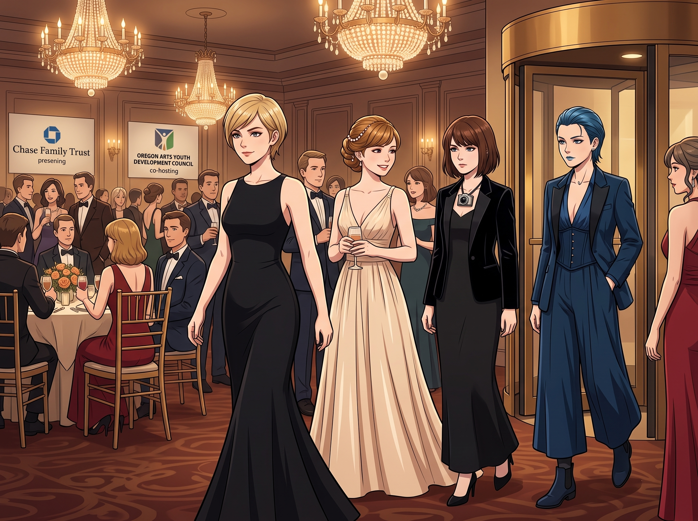
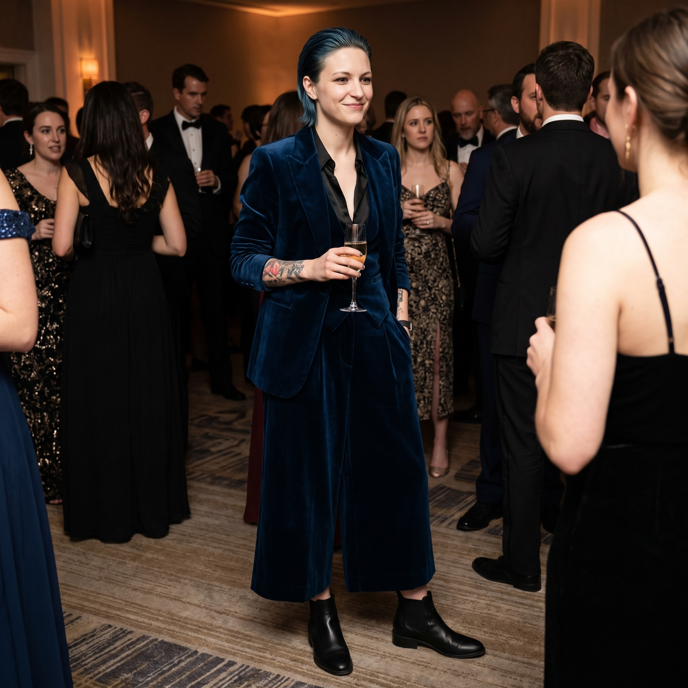
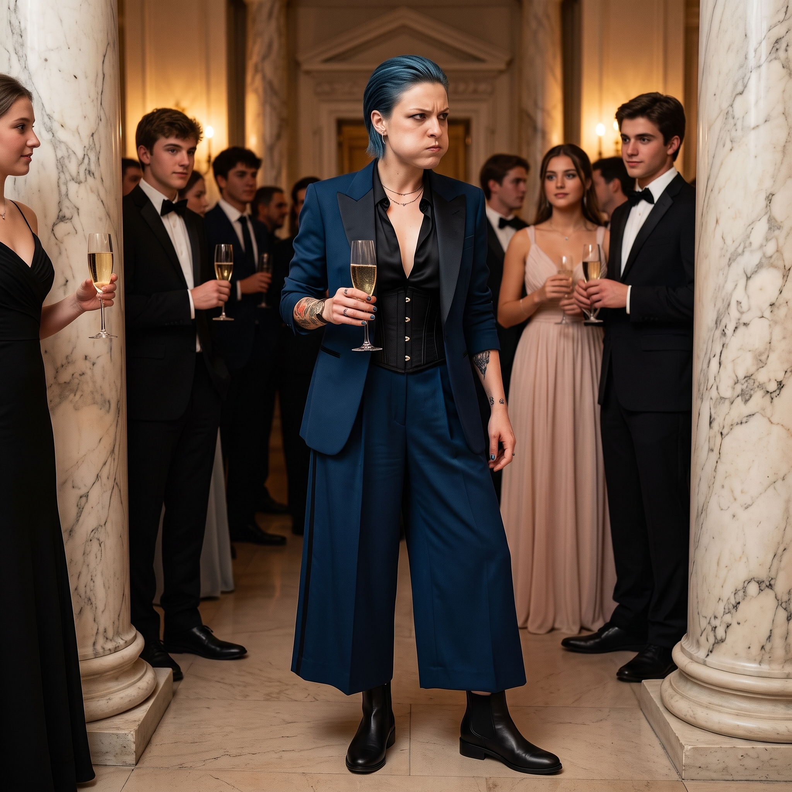
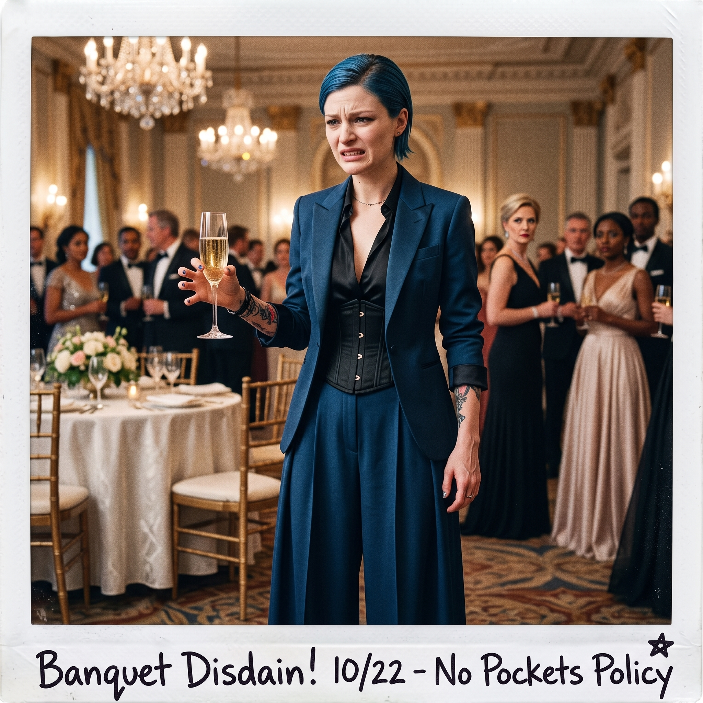

龍蝦危機




週五晚間，西雅圖頂級私人會所的宴會廳內水晶燈璀璨。
這場由 Chase 家族信託基金與俄勒岡藝術青年發展理事會聯合舉辦的高規格慈善晚宴，匯聚了西雅圖與波特蘭的商界名流、資深策展人與基金會理事。
當 Victoria 帶著二號車廂的三位「合夥人兼藝術家」踏入旋轉門時，現場的畫風在一秒內經歷了極致的高級感與隨時可能破功的緊繃張力。
一、盛裝登場：名媛的頂級造型改造術
在出發前，Victoria 用了整整四十八小時，憑藉極其殘酷的美學戒律將三人全部武裝到位。
Kate 穿著一襲淡香檳色的高定絲綢長裙，那頭金褐色長髮被 Victoria 盤成優雅的法式名媛發髻，耳邊垂著小珍珠。她端著無酒精葡萄汁，微笑道謝、舉手投足間帶著標準的教會名門淑女範，甚至在五分鐘內就與三位信託理事的夫人聊起了慈善花園與草本護理，完美到挑不出一絲毛病。
Victoria 知道 Max 穿不了緊身抹胸，特意為她挑選了一套極簡主義的黑色剪裁長裙，外搭俐落的絲絨小西裝，脖子上戴著一枚抽象派銀質相機鏡頭胸針。Max 整個人看起來像個來自紐約現代藝術博物館的年輕先鋒攝影師——只要她不開口講冷笑話。
讓 Chloe 穿蓬蓬裙無疑等於引爆核彈。Victoria 聰明地給她定制了一套深海藍色的吸煙裝，內搭一件深 V 絲質襯衫與收腰魚骨馬甲，下半身則是垂墜感極強的闊腿西裝裙褲，腳踩一雙低跟定制切爾西皮鞋。藍髮被整齊地向後梳成背頭，氣場冷冽、帥氣得讓半個宴會廳的年輕名媛紛紛側目。
二、表面上的名流社交 vs 內心深處的隨時破功危機
雖然外表達到了滿分，但只要仔細觀察兩位野生刺頭，就會發現她們的理智線已經緊繃到了極限。
穿著高跟小皮鞋的 Max，每走一步都像在踩剛洗完未乾的相紙，背脊挺得像一根生鏽的鐵柱。當基金會主席過來讚揚她的攝影集時，Max 努力維持著微笑，但右手下意識地想去摸脖子上根本不存在的復古拍立得，指尖在空氣中尷尬地抓了兩下，低聲對旁邊的 Chloe 咬耳朵：「Chloe……這雙鞋的鞋跟在謀殺我的腳後跟……我現在看見所有穿燕尾服的人都像穿著黑白相紙……」
Chloe 的雙手被 Victoria 嚴令絕對不准插進褲兜。她被迫端著一杯香檳，手指僵硬得像拿著一把沒上潤滑油的重型活動管鉗。更要命的是，沒有煙抽、沒有薄荷糖嚼的 Chloe，嘴裡只能含著一顆從甜品台順過來的固體白巧克力，腮幫子鼓起一塊，眼神兇狠地盯著前方的大理石羅馬柱，從牙縫裡擠出聲音：「考菲爾德長官……別動……老娘腰上這件該死的束身馬甲勒得比重型卡車的安全帶還緊……」
三、險些破功的餐桌龍蝦危機與瞬間救援
晚宴進行到主菜環節時，全場最危險的一幕爆發了。
侍者端上了一盤需要用專用精細銀鉗拆解的波士頓龍蝦。習慣了在車床上暴力拆裝的 Chloe，看著手裡那把精巧得像玩具一樣的銀質小鉗子，眼神裡閃過一絲暴躁。她試圖用食指發力，結果「咔嚓」一聲，整隻龍蝦鉗子滑脫，直接朝著長桌對面一位資深基金會理事的白襯衫飛了過去！
就在全場即將引發慘叫的 0.1 秒前——
Max 憑藉著神級的動態視覺捕捉，右手閃電般抄起餐巾在半空一兜，穩穩接住了龍蝦殼；Victoria 甚至連眉毛都沒動一下，端起酒杯微笑道：「理事長先生，這正是二號車廂當代裝置藝術展的核心概念——力學衝擊與材料的不穩定性。Price 小姐剛才展示的是重工業張力對傳統餐飲禮儀的解構。」Kate 則適時遞上一杯溫檸檬洗手水，甜甜地微笑：「理事長先生，這道龍蝦的香草醬汁非常棒，要不要我幫您換一份新的餐巾呢？」
對面的理事長被一套組合拳打得一愣一愣，隨後撫掌大笑：「妙啊！不愧是年輕一代的先鋒藝術家，連用餐都帶著打破常規的衝擊力！」
四、離場後的全員狂暴解放
晚上十點，晚宴正式結束。
當加長林肯轎車的車門「砰」一聲關上、隔絕了所有鎂光燈與名流視線的瞬間——
「呼——老娘終於活過來了！！」
Chloe 第一時間一把扯開了領口的領結，狂暴地解開馬甲的三顆扣子，踢飛皮鞋，整個人癱在真皮座椅上像條脫水的鹹魚，從口袋裡掏出一盒被壓扁的薄荷糖倒進嘴裡：「救命……剛才那三個小時簡直是酷刑！老娘寧願去手拆十台推土機底盤，也不要再跟那些拿著銀叉子假笑的老頭聊什麼後現代鋼鐵結構主義了！！」
Max 也第一時間把小西裝脫下來扔在一邊，抱著雙腳揉著泛紅的腳踝，長長地舒了一口氣，整個人靠在 Chloe 的肩膀上傻笑：「不過說真的……Chloe，妳剛才穿吸煙裝真的很帥，我剛才偷拍了三張特寫。」
「Price，Caulfield，注意你們現在癱倒的姿勢。」Victoria 優雅地取下鑽石耳環，揉了揉被高跟鞋踩得生疼的腳底，嘴角卻揚起一抹極其滿意的弧度，「雖然剛才那記龍蝦投擲差點讓我心臟驟停，但看在理事會剛才全票通過二號車廂下半年三十萬美元免稅藝術專項基金的份上……今晚算你們及格。」
Kate 坐在旁邊，打開隨身保溫杯，笑瞇瞇地給車廂裡的每個人倒了一杯溫熱的洋甘菊蜂蜜茶：「大家都辛苦了～待會兒路過 24 小時得來速，我們去買超大份的芝士漢堡和炸洋蔥圈吧～」
豪華轎車穿破西雅圖的夜色朝著波特蘭疾馳而去。車窗外是冰冷昂貴的都市名利場，車廂內則是卸下所有偽裝後、屬於她們自己的喧鬧與自由。